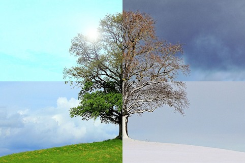
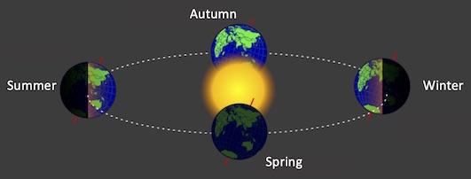

Seasons

It is often said that in the UK we don't have
a climate, we have weather. But of course this is not entirely
true. The circle of the seasons is one of the most noticeable
features of life. Although we might wish at times for
perpetual summer, the contrast between the different seasons
adds variety to life and is something to celebrate with
children. It is also something to try to understand. The level
at which you can do this obviously depends upon the age and
inclination of the child.
You could start by asking them what they notice about the
difference between summer and winter. The most obvious
difference is, of course, the temperature. So, why
should it be colder in winter? Where does the heat come from?
Well, the sun! And do they notice any difference between the
sun in summer and winter? They probably haven't noticed that
it gets higher in the sky in summer, but a little fishing will
probably get them to recall the the days are longer in summer.
This can lead to an interesting discussion about where the sun
goes after dark. A globe is really useful at this point, but
if you don't have one you can see pictures of the Earth as a
ball in space at sites such this
NASA one, and you can use a ball (or a grapefruit) and a torch
to illustrate the fact that when the sun shines on the Earth
there is an illuminated side and a dark side. The Earth spins
once round in 24 hours, so we move from the bright side to the
dark side in that time. As we do this, the sun moves across
the sky and disappears beneath the horizon.
The seasons arise from the fact that the Earth's axis is
tilted relative to the plane of its orbit around the sun, as
shown in the graphic on the right. In our summer (on the left
in the diagram) the north pole faces the sun, and so it is in
sunlight throughout the day. In other words, the sun never
sets at the north pole in summer. Conversely, in the winter
the north pole spends all day in the dark. We are more than
half-way towards the pole from the equator, so in the summer
we spend a lot more time in sunlight (almost 17 hours) than in
the winter (less than 8 hours). As a result of this, and the
fact that the sun rises higher in the sky in summer, it is a
lot warmer than in the winter.

Even children who are too
young to grasp the explanation above can understand that we
see more of the sun in summer, and can appreciate the
different character of each season and the way in which Nature
responds to the seasons. If they keep a Nature
Journal, then this is a great place to record changes
through the year: when do the first spring bulbs appear? when
do birds start building nests? when do leaves appear on the
trees? when is it warm enough to eat outdoors? when do the
leaves start to change colour? when do they fall? when is the
first frost?
If they don't keep a Nature Journal you could draw their
attention to such changes by helping them set up a Season
Scrap Book. For example, you could take photos of the same
scene (perhaps in your garden) at different times of year and
stick these in the book, so they can be compared. What
differences can they see between these photos? They could add
drawings to the scrap book, and stick things (e.g. leaves,
feathers, pressed flowers) into it.
Each season has its own special character, and sharing
seasonal activities with children is a great way to help them
appreciate the yearly cycle. Here are a few suggestions, you
can find more online at sites such as this,
and you will no doubt have ideas of your own.
Spring
- Look for the first stirrings of plants
- spring bulbs, catkins and later new leaves on hedges and
trees.
- Look out for the first spring lambs in
the coutryside and visit a farm park.
- Notice the days getting longer - the
sun rises earlier and sets later. It also rises and
sets progressively further north.
- Birds start collecting
nesting material. If you have a nesting box you may watch
them come and go, or they may nest in a nearby hedge.
- If you have a pond,
watch out for frogs and their eggs in February and March.
- Sow some seeds indoors or outdoors and
watch them germinate and grow.
- Make Easter an opportunity for some art
and craft work - eggs, nests, rabbits, chicks etc. Lots of
ideas here.
Summer
- Have a picnic in the countryside.
- Visit the coast and do some beachcombing.
- Play games in the woods and
see who can find the oldest tree.
- Look for minibeasts
in the garden and study them with a magnifying glass.
- Learn about flowers, watch bees at work and
bring some indoors for decoration or art work.
- Have a scavenger
hunt, in the garden, in a wood, on a beach.
- Lie down and watch the clouds
- what shapes can you see above you? Let your imagination
go!
Autumn
- Collect some seasonal fruits:
blackberries, damsons, apples etc. Use them in a pie, or
make jam.
- Collect horse chestnuts and play conkers.
- Visit a wood to see the autumn colour.
Which trees are most colourful? Collect some leaves which
can be used for art work.
- Carve a pumpkin for Halloween.
- Have a fire party, with sausages and
marshmallows on sticks, and hot chocolate.
- Autumn is the best time to spot fungus.
A wood is the best place to look.
- Have a torchlit night walk in nature.
Stop and listen - what can you hear at night?
Winter
- When does the first frost arrive? What
effects does it have on the garden?
- Look at the stars. If you live in a town, try
to get out to where the sky is darker. Can you see the
Milky Way?
- Winter is a good time to appreciate the
shape of trees. How many trees can you identify
by their shape?
- Wetlands will host winter geese and
waders.The Wildlife Trusts have a useful guide to winter
wildlife activities here.
- Decorate a tree in the garden for
Christmas.
- Feed the birds through the winter and
see which species visit you. Take part in the RSPB
birdwatch in January.
- If you get snow then
make a snowman, or a snow animal. Look at a snowflake
with a magnifying glass.